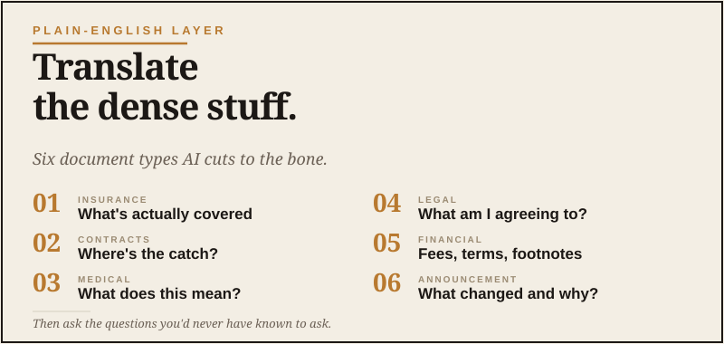

Plain English Layer
Translate the dense stuff. Move on with your day.

Modern life produces an enormous amount of documents that are technically in English but might as well be in Latin. Insurance policy renewals. Mortgage documents. HOA letters. Medical reports with sixteen acronyms. Financial statements with footnotes inside footnotes. Contracts where the important clause is buried on page 47. Somewhere, a committee worked very hard to make simple things feel like a hostage note.
For decades, the standard move was one of three things: read it carefully and pretend you understood, skim it and sign anyway, or call somebody who understood it and hope they had time. I’ve done all three. None of them make you feel especially capable.
AI has fundamentally changed this. It is genuinely good at taking a dense document and explaining what it actually means. Used right, it’s like having a smart, patient friend who specializes in whatever the document is about — available at any hour, willing to answer follow-up questions, no awkwardness about asking what feels like a basic question.
Here’s how to do it well.
First: the privacy rule, in case you skipped it
Before you paste anything into AI, sanitize it. Remove names, account numbers, Social Security numbers, addresses, anything personally identifying. The AI doesn’t need them to understand the document. Use search-and-replace if you need to do this fast.
The exception is for documents that aren’t personal — published policies, public contracts, manuals, generic terms of service. Those are fine to paste as-is.
If the document is too sensitive even sanitized — say, a medical record with details you don’t want anywhere outside your doctor’s system — describe the situation to the AI in your own words rather than pasting the document.
The basic prompt that works
That single prompt gets you ninety percent of what you need. The “flag anything unusual” line is the one that earns its keep — it surfaces things that wouldn’t jump out at you because you don’t know what normal looks like for that kind of document.
Five document types and the specific prompts that work
Insurance policies
Good for: home, auto, umbrella, life, health policies. Especially useful at renewal time when you’re comparing the new policy to last year’s.
Mortgage and loan documents
Medical reports and lab results
Critical: this is for understanding, not diagnosis. Always follow up with the actual doctor. But going into that conversation with vocabulary and questions makes it dramatically more productive. The goal is not to become the doctor. The goal is to stop sitting there like the adults are speaking in another room.
Contracts and legal agreements
For anything significant — buying a business, signing a non-compete, agreeing to a major contract — use AI to prepare for the lawyer conversation, not as a substitute for the lawyer.
Tax documents and financial statements
The follow-up questions that unlock the real value
The first explanation is useful. The follow-up conversation is where AI shines for documents.
Try these:
Each of those takes ten seconds and improves your understanding meaningfully.
What to do with the answer
This is the move that separates people who use AI well from people who use it like a magic 8-ball.
Don’t just take the AI’s explanation as the final word. Use it as the starting point for an actual decision.
For routine documents — credit card terms, basic policy renewals, standard contracts — the AI’s explanation is usually enough. You understand what you’re signing. Sign it.
For consequential documents — anything affecting your money, health, business, or family in a major way — use the AI’s explanation to prepare a smarter conversation with the human professional whose job it is to advise on this. You’ll get more out of that conversation, and you won’t feel like you’re hearing it all for the first time.
The thing nobody mentions
Here’s an unexpected benefit of doing this regularly. After a few months of using AI to translate dense documents, you start picking up the patterns yourself. You start recognizing the standard clauses, the standard structures, the standard tricks.
You don’t become a lawyer or an insurance expert. But you stop being completely at the mercy of every dense document somebody hands you. That’s a meaningful shift in capability for a grown man, and it’s the kind of slow, accumulated competence that most AI advice doesn’t talk about.
It’s also the part of using AI well that I find most worthwhile. It’s not about producing more output faster. It’s about understanding more of the world I’m walking through.